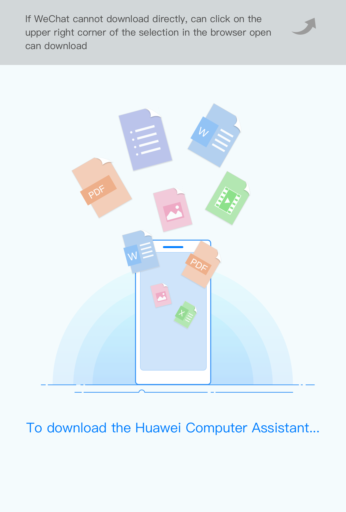

<script>
(function(win, lib) {
	if (lib.callapp) return;
	var ua = navigator.userAgent;
	var browser = {
		isSafari: /Version\/[\d\.]+.*Safari/.test(ua),
		// isChrome: /Chrome/i.test(ua),
		chromeV: ua.match(/Chrome\/(\d+)/),
		isAndroid: /Android/i.test(ua),
		isIOS: /iPhone|iPad|iPod/i.test(ua),
		isWechat: /MicroMessenger/i.test(ua),
		iosVersion: function () {
			if (/iP(hone|od|ad)/.test(navigator.platform)) {
				var v = (navigator.appVersion).match(/OS (\d+)_(\d+)_?(\d+)?/);
				return [parseInt(v[1], 10), parseInt(v[2], 10), parseInt(v[3] || 0, 10)];
			}
			return null;
		}
	};

	/**
	 * 插入微信提示
	 */
	function writeWechatTip() {
		document.body = document.createElement('body');
		var divEle = document.createElement("div");
		divEle.className = "wechat-tip";
		divEle.id = "JwechatTip";
		divEle.innerHTML = ''
		document.body.appendChild(divEle);
		divEle.addEventListener("click",function(){
			divEle.style.display = "none";
		},false);
	}
	
	//检查app是否打开
    function checkOpen(cb){
        var _clickTime = +(new Date());
        function check(elsTime) {
            if ( elsTime > 3000 || document.hidden || document.webkitHidden) {
                cb(1);
            } else {
                cb(0);
            }
        }
        //启动间隔20ms运行的定时器，并检测累计消耗时间是否超过3000ms，超过则结束
        var _count = 0, intHandle;
        intHandle = setInterval(function(){
            _count++;        
            var elsTime = +(new Date()) - _clickTime;
            if (_count>=100 || elsTime > 3000 ) {
                clearInterval(intHandle);
                check(elsTime);
            }
        }, 20);
    }

	lib.callapp = function(o) {
		if (!o || typeof(o) != "object") return;
		if (typeof(o.scheme) == "undefined" || o.scheme == "") return;
		if (typeof(o.package) == "undefined" || o.package == "") return;
		if (typeof(o.schemeUrl) != "undefined" && o.schemeUrl != "") {
			if (browser.isAndroid) {
				if (browser.isWechat) {
					writeWechatTip();
				} else {
					var url = window.location.search; //获取url中"?"符后的字串
					url.indexOf('?');
					o.schemeUrl += url.substr(0);
					win.location.href = o.schemeUrl; //先去尝试拉取目标app					
					var t = Date.now();
					var loadTimer = setTimeout(function() {
						if (document.hidden || document.webkitHidden) {
						    return;
						}
						if (Date.now() - t < o.iconnectTime) {
							o.iconnectUrl += url.substr(0);
							win.location.href = o.iconnectUrl; //如果目标app拉起不起来，尝试去拉iconnect的app
							t = Date.now();
							loadTimer = setTimeout(function() {
								if (document.hidden || document.webkitHidden) {
									return;
								}
								if (Date.now() - t < o.downloadTime) {
									win.location.href = o.dowmloadUrl; //如果目标app拉起不起来，尝试去拉iconnect的app
								}
							}, 1000);
							win.location.href = null;
						}
					}, 1000);
					win.location.href = null;
				}
				// 当本地app被唤起，则页面会隐藏掉，就会触发pagehide与visibilitychange事件
				// 在部分浏览器中可行，网上提供方案，作hack处理
				var visibilitychange = function() {
					var tag = document.hidden || document.webkitHidden;
					tag && clearTimeout(loadTimer);
				};
				document.addEventListener('visibilitychange', visibilitychange, false);
				document.addEventListener('webkitvisibilitychange', visibilitychange, false);
				// pagehide 必须绑定到window
				window.addEventListener('pagehide', function() {
					clearTimeout(loadTimer);
				}, false);
				
			} else { //for pc test
				var url = window.location.search; //获取url中"?"符后的字串
				url.indexOf('?');
				o.schemeUrl += url.substr(0);
				win.location.href = o.schemeUrl; //先去尝试拉取目标app
				console.log("scheme: %s", o.schemeUrl);
				var t = Date.now();
				setTimeout(function() {
					if (Date.now() - t < o.iconnectTime) {
						o.iconnectUrl += url.substr(0);
						win.location.href = o.iconnectUrl; //如果目标app拉起不起来，尝试去拉iconnect的app
						console.log("scheme: %s", o.iconnectUrl);
						t = Date.now();
						setTimeout(function() {
							if (Date.now() - t < o.downloadTime) {
								win.location.href = o.dowmloadUrl; //如果目标app拉起不起来，尝试去拉iconnect的app
								console.log("scheme: %s", o.dowmloadUrl);
							}
						}, 3000);
					}
				}, 3000);
			};
		};
	}
})(window, window.lib || (window.lib = {}));
</script>

<script type="text/javascript">
function loadCallapp(fn) {
	fn = fn || function() {};
	if (window.lib && typeof(window.lib.callapp) != "undefined") {
		fn();
	}
}

lib.callapp({
	"scheme":"com.huawei.pcassistant",
	"package":"com.huawei.pcassistant",
	"schemeUrl":"com.huawei.pcassistant://mainactivity", //目标app拉取的scheme
	"iconnectUrl":"com.huawei.pcassistant.installer://InstallerActivity", //如果目标app不存在首先去拉取华为内置app iconnect的scheme
	"iconnectTime":"1200", //等待多久去拉取内置app
	"dowmloadUrl":"img/HwPCAssisant.apk", //目标app的下载地址
	"downloadTime":"1200" //等待多久去下载目标app
});

</script>
